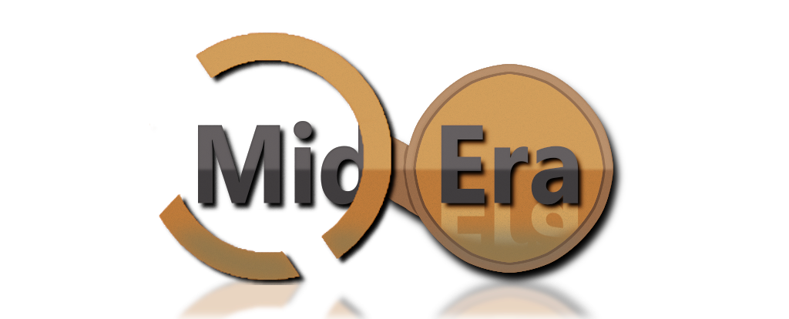

MidEra is a free cross platform level editor for games based on the MidEra Game Engine. It runs on Windows (10 and newer) and Linux. MidEra's Level Editor is Based on TrenchBroom; A Quake Level Editor. It's is easy to use and provides many tools for creating various types levels/maps with ease.